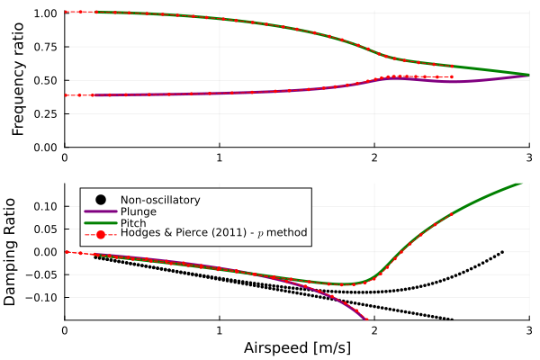

Flutter and divergence of a typical aeroelastic section
This example illustrates how to set up a flutter/divergence analysis of a 2-DOF typical aeroelastic section. The typical section used was defined by Hodges and Pierce.
 Typical section
Typical section
The code for this example is available here.
Problem setup
Let's begin by setting up the variables of our problem: we'll model the 2-DOF (pitch and plunge) typical section, which is a two-dimensional idealization, by setting up a rigid wing supported by displacement and rotation springs. We leverage the function typical_section_data to extract the typical section parameters.
using AeroBeams, LinearInterpolations, DelimitedFiles
# Aerodynamic solver
aeroSolver = Inflow(6)
# Derivation method
derivationMethod = FD(nothing)
# Atmosphere
altitude = 0
atmosphere = standard_atmosphere(altitude)
ρ = atmosphere.ρ
# Given typical section data
typicalSectionName = "HP-1"
airfoil = deepcopy(flatPlate)
a,e,μ,rα²,σ,ωα,c = typical_section_data(typicalSectionName)
# Derived typical section data: semichord, mass per unit length, pitching inertia, distance from elastic axis to mass axis, plunge stiffness and pitch stiffness
b = c/2
m = μ * π*ρ*b^2
Iα = rα²*m*b^2
e2 = -(e-a)*b
kh = m*(σ*ωα)^2
kα = Iα*ωα^2
# Number of elements for the wing (the results are independent of it)
nElem = 2We now create the aerodynamic surface to be attached to the wing's beam, the attachment springs, and the rigid beam of the wing. Two sliding journals (allowing only pitch and plunge motion) are added at the wingtips, further removing any elastic effects of the beam.
# Aerodynamic surface
surf = create_AeroSurface(solver=aeroSolver,derivationMethod=derivationMethod,airfoil=airfoil,c=c,normSparPos=(a+1)/2,updateAirfoilParameters=false)
# Attachment springs (in pitch and plunge)
springs = create_Spring(elementsIDs=[1],nodesSides=[2],ku=kh*[0;0;1],kp=kα*[1;0;0])
# Rigid wing
L = 1
∞ = 1e15
wing = create_Beam(name="wing",length=L,nElements=nElem,S=[isotropic_stiffness_matrix(∞=∞)],I=[inertia_matrix(ρA=m,ρIs=Iα,e2=e2)],aeroSurface=surf,springs=[springs])
# BCs
journal1 = create_BC(name="journal-1",beam=wing,node=1,types=["u1A","u2A","p2A","p3A"],values=[0,0,0,0])
journal2 = create_BC(name="journal-2",beam=wing,node=nElem+1,types=["u1A","u2A","p2A","p3A"],values=[0,0,0,0])The model consists of the beam and boundary conditions. We also select the airspeed range for analysis, the number of oscillatory modes to be extracted and initialize the outputs.
# Model
typicalSectionFlutterAndDivergence = create_Model(name="typicalSectionFlutterAndDivergence",beams=[wing],BCs=[journal1,journal2])
# Airspeed range
URange = collect(5:1:80)
# Number of oscillatory modes
nModes = 2
# Pre-allocate memory and initialize output arrays
untrackedFreqs = Array{Vector{Float64}}(undef,length(URange))
untrackedDamps = Array{Vector{Float64}}(undef,length(URange))
untrackedEigenvectors = Array{Matrix{ComplexF64}}(undef,length(URange))
problem = Array{EigenProblem}(undef,length(URange))Problem solution
We're now ready to solve the eigenproblem at each airspeed value.
# Sweep airspeed
for (i,U) in enumerate(URange)
# Update airspeed on model
set_motion_basis_A!(model=typicalSectionFlutterAndDivergence,v_A=[0;U;0])
# Create and solve eigenproblem
problem[i] = create_EigenProblem(model=typicalSectionFlutterAndDivergence,nModes=nModes,frequencyFilterLimits=[1e-3,1e3])
solve!(problem[i])
# Frequencies, dampings and eigenvectors
untrackedFreqs[i] = problem[i].frequenciesOscillatory
untrackedDamps[i] = round_off!(problem[i].dampingsOscillatory,1e-8)
untrackedEigenvectors[i] = problem[i].eigenvectorsOscillatoryCplx
endPost-processing
The first post-processing step is to use the built-in mode tracking algorithm to enhance our chances of correctly tracking the oscillatory modes. We then set arrays for the frequecies and dampings of each mode, and find the flutter onset and offset (actually absent in this case) speeds. To identify the divergence, we have to look at the damping of the non-oscillatory (zero-frequency) modes.
# Apply mode tracking
freqs,damps,_ = mode_tracking(URange,untrackedFreqs,untrackedDamps,untrackedEigenvectors)
# Separate frequencies and damping ratios by mode
modeFrequencies = Array{Vector{Float64}}(undef,nModes)
modeDampings = Array{Vector{Float64}}(undef,nModes)
for mode in 1:nModes
modeFrequencies[mode] = [freqs[i][mode] for i in eachindex(URange)]
modeDampings[mode] = [damps[i][mode] for i in eachindex(URange)]
end
# Flutter speed and flutter frequency
flutterOnsetSpeed = [Float64[] for _ in 1:nModes]
flutterOnsetFreq = [Float64[] for _ in 1:nModes]
flutterOffsetSpeed = [Float64[] for _ in 1:nModes]
flutterOffsetFreq = [Float64[] for _ in 1:nModes]
for mode in 1:nModes
# Flutter onset
iOnset = 1 .+ findall(i -> modeDampings[mode][i] < 0 && modeDampings[mode][i+1] > 0, 1:length(modeDampings[mode])-1)
if isempty(iOnset) || isempty(filter!(x->x!=1,iOnset))
continue
end
for i in iOnset
push!(flutterOnsetSpeed[mode],interpolate(modeDampings[mode][i-1:i],URange[i-1:i],0))
push!(flutterOnsetFreq[mode],interpolate(modeDampings[mode][i-1:i],modeFrequencies[mode][i-1:i],0))
end
# Flutter offset
iOffset = 1 .+ findall(i -> modeDampings[mode][i] > 0 && modeDampings[mode][i+1] < 0, 1:length(modeDampings[mode])-1)
if isempty(iOffset)
continue
end
for i in iOffset
push!(flutterOffsetSpeed[mode],interpolate(-modeDampings[mode][i-1:i],URange[i-1:i],0))
push!(flutterOffsetFreq[mode],interpolate(-modeDampings[mode][i-1:i],modeFrequencies[mode][i-1:i],0))
end
end
# Damping of non-oscillatory modes
dampingsNonOscillatory = [problem[i].dampingsNonOscillatory for i in eachindex(URange)]We also load a reference solution obtained using the $p$ method for stability analysis using the unsteady aerodynamic theory of Peters et al., as proposed in problem 5.7 of Hodges and Pierce.
# Load reference data
freqsRef = readdlm(pkgdir(AeroBeams)*"/test/referenceData/typicalSectionFlutterAndDivergence/freqs.txt")
dampsRef = readdlm(pkgdir(AeroBeams)*"/test/referenceData/typicalSectionFlutterAndDivergence/damps.txt")We'll visualize the results through the V-g-f diagrams, i.e., the evolution of the frequencies and dampings (both normalized by the in vacuo pitching frequency) with airspeed. The flutter speed is that at which the damping of an oscillatory mode, in this case the pitch mode, becomes positive. Conversely, the divergence speed is that at which the damping of a non-oscillatory mode becomes positive. The results match almost exactly! Notice that once the damping of the non-oscillatory mode leading to divergence becomes positive, AeroBeams can no longer identify it. This is a current limitation of package, albeit the divergence speed can be found in spite of it.
using Plots, ColorSchemes
gr()
# Plot configurations
modeColors = get(colorschemes[:rainbow], LinRange(0, 1, nModes+1))
modeLabels = ["Plunge" "Pitch"]
lw = 3
ms = 2
# Frequency plot
plt11 = plot(ylabel="Frequency ratio", ylims=[0,1.01])
for mode in 1:nModes
plot!(URange, modeFrequencies[mode]/ωα, c=modeColors[mode], lw=lw, label=false)
end
for r in 2:axes(freqsRef, 1)[end]
plot!(freqsRef[1,:], freqsRef[r,:], ls=:dash, c=modeColors[end], lw=1, label=false)
end
# Damping plot
plt12 = plot(xlabel="Airspeed [m/s]", ylabel="Damping Ratio", ylims=[-0.15,0.15],legend=:topleft)
for i in eachindex(URange)
for j in eachindex(dampingsNonOscillatory[i])
scatter!([URange[i]], [dampingsNonOscillatory[i][j]/ωα], c=:black, ms=ms, msw=0, label=false)
end
end
scatter!([NaN], [NaN], c=:black, ms=ms, msw=0, label="Non-oscillatory")
for mode in 1:nModes
plot!(URange, modeDampings[mode]/ωα, c=modeColors[mode], lw=lw, label=modeLabels[mode])
end
for r in 2:axes(dampsRef, 1)[end]
plot!(dampsRef[1,:], dampsRef[r,:], ls=:dash, c=modeColors[end], lw=1, label=false)
end
plot!([NaN], [NaN], ls=:dash, c=modeColors[end], lw=1, label="\$p\$ method")
plt1 = plot(plt11,plt12, layout=(2,1))
Finally, we show the numerical values of the nondimensional flutter speed and frequency
# Compute nondimensional flutter speed and frequency
flutterSpeedAll = vcat(flutterOnsetSpeed...)
flutterFreqAll = vcat(flutterOnsetFreq...)
ind = argmin(flutterSpeedAll)
flutterSpeed = flutterSpeedAll[ind]
flutterFreq = flutterFreqAll[ind]
println("Nondimensional flutter speed = $(flutterSpeed/(b*ωα))")
println("Nondimensional flutter frequency = $(flutterFreq/ωα)")Nondimensional flutter speed = 2.1727435217205477
Nondimensional flutter frequency = 0.6533722973174454This page was generated using Literate.jl.